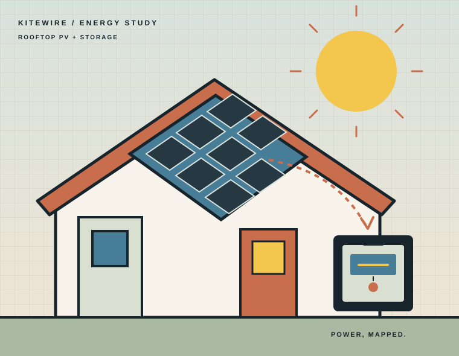

A / RESIDENTIAL
⌂
Home
continuity
Keep essential circuits in the conversation: lights, refrigeration, connectivity and the routines that make a house work.
Explore home systems ↗ENERGY, WITHOUT THE GUESSWORK
Solar and storage should fit the way you live and work. Start with the loads that matter, then build a system around the real brief.

01 / START WITH THE USE CASE
There is no universal kit. A home, a cold room and a small office ask very different things of an energy system.
Keep essential circuits in the conversation: lights, refrigeration, connectivity and the routines that make a house work.
Explore home systems ↗Map critical loads, operating hours and expansion plans before choosing the balance of solar, storage and grid supply.
Explore business systems ↗Think beyond the building. Pumps, workshops and remote equipment need a brief built around duty cycles and site conditions.
Explore site systems ↗02 / THE KITEWIRE METHOD
Before a panel count or battery model, we want to understand what must stay on, when it runs and what can wait. That is how a quote becomes a plan.
What matters most when the grid is unavailable?
Build a load picture from appliances, schedules and site conditions.
Balance generation, storage, protection and future needs.
Explain the system, its limits and how to look after it.
A CLEARER WAY TO START
One room, one shop, one stubborn pump. Start with what you need to keep moving.